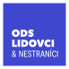
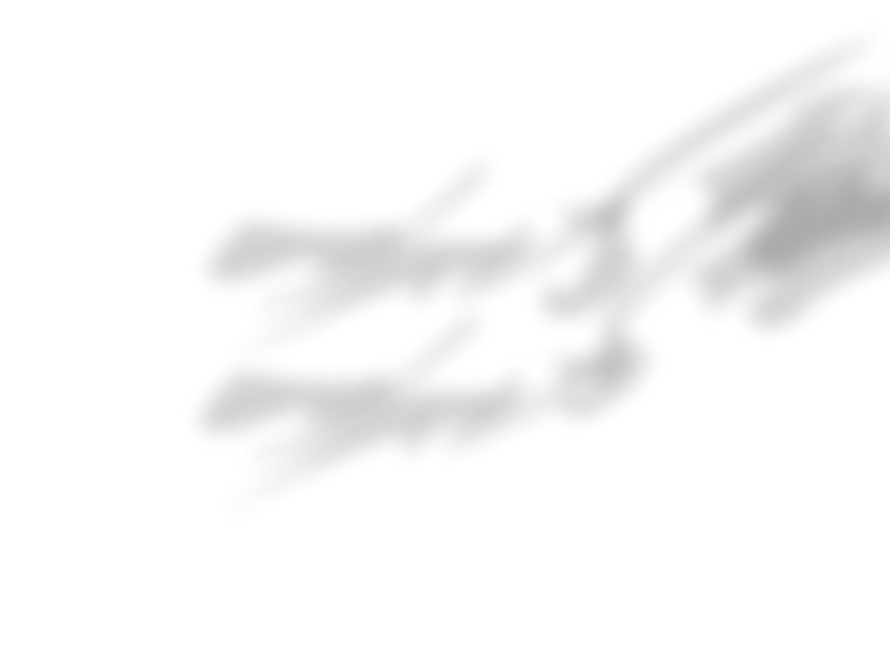

SrdcOVA na Jihu s týmem Radima Ivana. Město,
které slouží občanovi. Místo výmluv hledáme řešení
a posouváme Jih dopředu.
Máte nápad, jak udělat Jih lepším místem pro život? Chcete se zapojit do kampaně? Nebo nám prostě jen tak napsat? Vyplňte formulář a my se vám ozveme zpátky.
Vaše zpráva byla odeslána. Ozveme se vám zpátky co nejdříve.